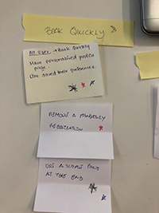

UX Use Case
Redesign of thefork
Brief
Thefork is an online restaurant booking application which offers discounts and other services related to your booking. The aim of the app is to involve the user in online booking and to build a longterm relation with the users. It should have an interactive user interface and it should be easy and quick to book a table.
Research & Benchmarking
During our research we made a major analysis of painpoints in the app when testing it. We also searched for information regarding what the user expects from the app. What are people's eating style in general? Is it essential with different requirements lactose-free, vegan due to allergies or other reasons? And lastly, we had a workshop to comprehend all our findings and set a priority to the different findings.



Personas
We chose three different personas in order to include our users' different views and opinions about a desirable restaurant booking app and what they in general find problematic with thefork.
Martini
Special requirements
About
Martini likes to use online booking restaurants apps. However, she is lactose intollarent and prefer in generall that different allergy considerations are present in the app as their is often some allergies in a group of people going out for dinner.
Painpoints
When using thefork she finds it hard to set the filter to aid in the search of restaurants providing allergy friendly options. It is very hard to find the filters for this purpose, especially for mobile.
Carlos
Businesss traveller
About
As Carlos travells a lot and have a tight schedule when doing so, it's important for him to know if the app work in the destinated area.
Painpoints
When he tries to search for restaurants outside the scope of the fork’s area the feedback to the user is lacking. It is possible to search for these cities but the user get no hits and the feedback is misleading.

Joe
Common User
About
Joe often goes out to eat with friends and collegues. He doesn't have any requirements outside the ordinary flow but would like to pay as little as possible and to book table quickly. He wants to find the best value for the money immediately, preferribly using discount. He does not want to login to the application and provide personal details.
Painpoints
The information in the app is not user adjusted, and even though Joes uses it a lot he needs to provide the app with the same information multiple times. He needs ot look for the discounts nearby with multiple clicks.
Our Insights
- User interaction with proper feedback missing
- Booking flow too complicated and long
- Online payment not present
- Have to ask waiter for discount explicitly
- Booking was not updated to restaurant even after booking
- Hard to find for filters for restaurants immediately
Solution
In order to improve and optimize the UX of thefork mobile app we decided to focus on the following flows:
- New start & home page
- Quickly research using filters
- Booking without registration
- Payment of the bill through the app
- Personalized account
User flow
In this flow we considered all factors introduced to us currently on their site. At first sight we thought that the two subflows of single vision and progressive could be more integrated, but as the prices are different they had to be separated.
Prototypes
Prototypes created in Adobe XD.


Wireframes
1 / 9
Chat with customer service available troughout the flow
2 / 9
Chat with customer service available troughout the flow
3 / 9
You can always skip the prescription steps and buy directly
4 / 9

Choose Single vision or Progressive
5 / 9

Choose Standard or Premium lenses
6 / 9
Choose Standard lens or Standard Thin lens
7 / 9

For Blue-light view
8 / 9

More info about blue-light
9 / 9

Add blue-light
10 / 9

Values to be added with guideline possibilities
12 / 9

13 / 9

If the glasses are not available with the values added, other similar glasses are presented.
14 / 9
If they are available you move on to the next step
❮
❯